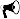
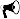

キーワード
カービング、写真測量、数値モデリング、波形解析
研究成果
- M. Minowa, E. A. Podolskiy, G. Jouvet, Y. Weidmann, D. Sakakibara, S. Tsutaki, R. Genco, S. Sugiyama (2019), Calving flux estimation from tsunami waves, Earth and Planetary Science Letters, 515, 283–290, doi:10.1016/j.epsl.2019.03.023
 
 - M. Minowa, E. A. Podolskiy, S. Sugiyama, D. Sakakibara and P. Skvarca (2018), Glacier calving observed with time-lapse imagery and tsunami waves at Glaciar Perito Moreno, Patagonia, Journal of Glaciology, 64(245), 362–376, doi:10.1017/jog.2018.28